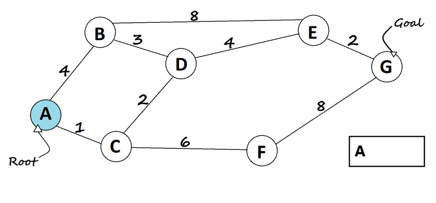

A* search is the most commonly known form of best-first search. It uses heuristic function h(n), and cost to
reach the node n from the start state g(n). It has combined features of UCS and greedy best-first search, by
which it solve the problem efficiently. A* search algorithm finds the shortest path through the search space
using the heuristic function. This search algorithm expands less search tree and provides optimal result
faster. A* algorithm is similar to UCS except that it uses g(n)+h(n) instead of g(n).
In A* search algorithm, we use search heuristic as well as the cost to reach the node. Hence we can combine
both costs as following, and this sum is called as a fitness number.
f(n)= g(n)+h(n)
Where, h(n)= estimated cost from node n to the goal.
f(n)=Estimated cost of the cheapest solution
g(n)=cost to reach node n from start state
Algorithm
Step 1: Place the starting node in the OPEN list.
Step 2: Check if the OPEN list is empty or not, if the list is empty then return failure and
stops.
Step 3: Select the node from the OPEN list which has the smallest value of evaluation
function (g+h), if node n is goal node then return success and stop, otherwise
Step 4: Expand node n and generate all of its successors, and put n into the closed list. For
each successor n', check whether n' is already in the OPEN or CLOSED list, if not then compute
evaluation function for n' and place into Open list
Step 5: Else if node n' is already in OPEN and CLOSED, then it should be attached to the back
pointer which reflects the lowest g(n') value.
Step 6: Return to Step 2.
A* is a combination of Dijkstra and Greedy. It uses distance from the root node plus heuristics distance
to the goal. The algorithm terminates when we find the goal node.
Given the same heuristic distances mentioned above.

Assign dis[v] for all nodes = INT_MAX (distance from root node + heuristics of every node).
Assign dis[root] = 0 + heuristic(root, goal) (distance from root node to itself + heuristics).
Add root node to priority queue.
Loop on the queue as long as it's not empty.
In every loop, choose the node with the minimum distance from the root node in the queue
+ heuristic (root node will be selected first).
Remove the current chosen node from the queue (vis[current] = true).
If the current node is the goal node, then return it.
For every child of the current node, do the following: